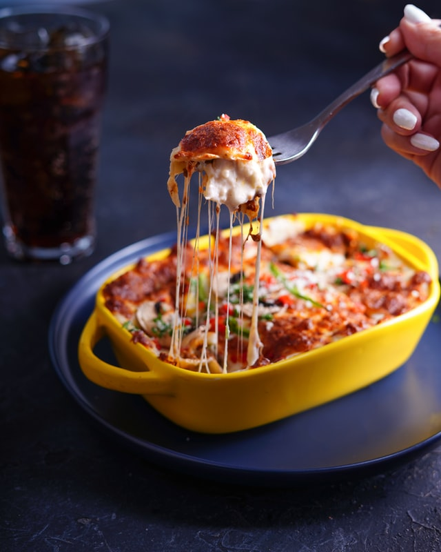

Hearty vegetable lasagna

This delicious lasagna recipe will blow your socks off!
Ingredients:
- 1 (16 ounce) package of lasagna noodles
- 1 Pound of fresh mushrooms
- 3/4 Cup chopped green onion
- 3 cloves of minced garlic
- 2 tablespoons of vegetable oil
- Pasta sauce
- Dried basil
Steps:
- Cook the lasagna noodles in a large pot of boiling water for 10 minutes, or until al dente. Rinse with cold water, and drain.
- In a large saucepan, cook and stir mushrooms, green peppers, onion, and garlic in oil. Stir in pasta sauce and basil; bring to a boil. Reduce heat, and simmer 15 minutes.
- Mix together ricotta, 2 cups mozzarella cheese, and eggs.
- Preheat oven to 350 degrees F (175 degrees C). Spread 1 cup tomato sauce into the bottom of a greased 9x13 inch baking dish. Layer 1/2 each, lasagna noodles, ricotta mix, sauce, and Parmesan cheese.
Repeat layering, and top with remaining 2 cups mozzarella cheese.
- Bake, uncovered, for 40 minutes. Let stand 15 minutes before serving.